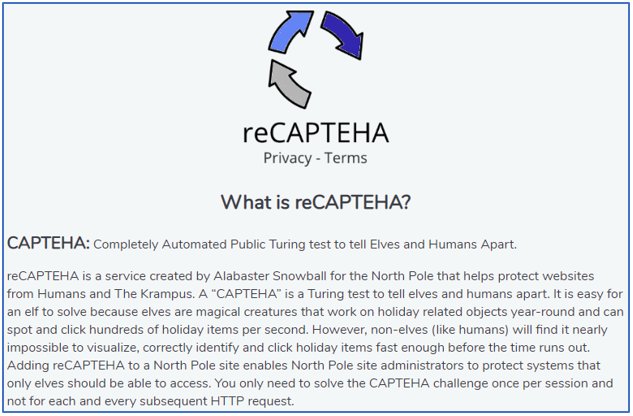
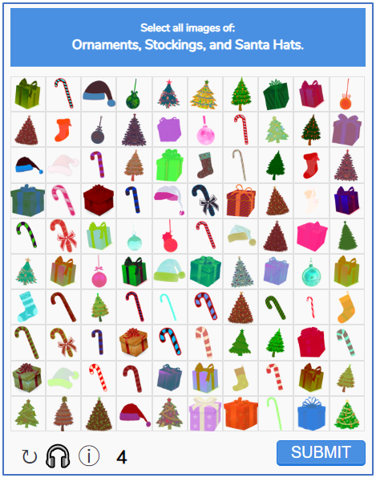
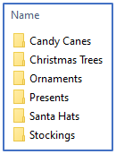
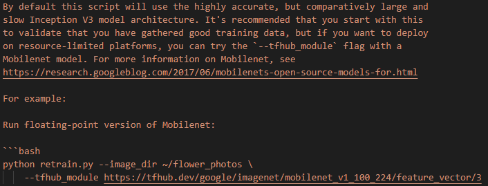
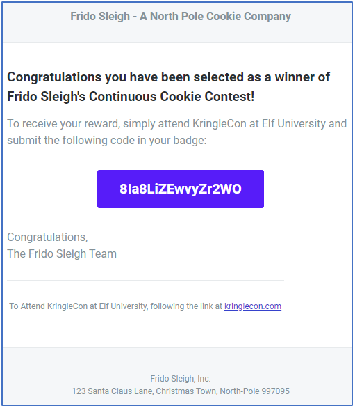

8) Bypassing the Frido Sleigh CAPTEHA¶
Challenge¶
Difficulty: 4/5
Help Krampus beat the Frido Sleigh contest. For hints on achieving this objective, please talk with Alabaster Snowball in the Speaker Unpreparedness Room.
Answer¶
8Ia8LiZEwvyZr2WO
Solution¶
1. Discovery¶
To solve this challenge we had to utilise Machine Learning to solve a CAPTEHA security challenge and then submit as many entries as possible in the Frido Sleigh contest.
You may be asking what is a CAPTEHA security challenge. The best way to answer this is with a couple of images taken from the Frido Sleigh website.
The first image was obtained by clicking on the privacy terms of the CAPTEHA control and provides a desription about what it is.
The second image provides an example of the control in action. We had approx 5 seconds to identify all the correct images (from a set of 100 images). The control consists of 6 categories of images (candy canes, christmas trees, ornaments, presents, santa hats and stockings).
Starting artefacts¶
The hint titled Machine Learning provided by Alabaster Snowball formed an essential part of how to solve the challenge. The hint points to a YouTube presentation by Chris Davis titled Machine Learning Use Cases for Cyber Security. Chris provided some very useful Python code in the following repository that we later adapted to solve the CAPTEHA control. This code provided an example of using machine learning with image recognition to distinguish apples from bananas based on Python and the TensorFlow (v1.15) library.
In addition, we had the following resources which were provided by Krampus when he spoke about the challenge:
2. Solving the challenge¶
Constructing the Python environment¶
We created a Python virtual environment in our project directory with all the libraries that were needed by the Machine Learning example. To recreate Python virtual environment please follow the following steps from a Windows 10 computer with Python 3.7.5:
Caution
The code in the repository from Chris Davis, which we used as the basis of our solution, has a dependency on TensorFlow 1.1.5. We found that this didn’t work with Python 3.8.x and had to revert back to a Python 3.7.5 environment.
Download the documentation repository from the following link: ` <https://github.com/alapornik/HHC2019>`_.
Open a PowerShell prompt and navigate to the /source/o8-capteha/ folder
Enter the following command to create a virtual environment:
python -m venv .\.venvActivate the virtual environment by entering the following command:
.\.venv\Scripts\Activate.ps1Note
You can use the
deactivatecommand to deactivate the virtual environment.Install the needed modules using the following command:
pip install -r .\requirements.txtDownload and extract the training images archive into the /source/o8-capteha/training_images/ folder. The folder structure of training_images should resemble the following:
Edit the o8-capteha.py script in a text editor and modify the yourREALemailAddress variable with your email address.
Training the model¶
The first step is to undertake what’s called supervised learning where the goal is to learn the relationship between training inputs and training targets. For the challenge this means running the retrain.py script so the model can distinguish between the 6 categories of images (candy canes, christmas trees, ornaments, presents, santa hats and stockings).
We took advantage of the training images supplied by Krampus.
Note
We also wrote a script (sorry, we didn’t have time to tidy up this script and include it in our repository) that saved all the images to disk with names that reflected the image category and a unique ID. If needed we could have used multiple runs of this solution to build a training set of images.
Our first efforts utilised the default Inception v3 model. We found this model to be accurate but far to slow with the limited computing resources we had available. Predicting the images in the CAPTEHA challenge with this model took almost 40 seconds which was well beyond the 5 second deadline.
Note
Testing indicated that the actual deadline to submit an answer via the API was actually 10 seconds.
We tried upgrading our display drivers and even installed the Nvidia CUDA package on our computer in an effort to make TensorFlow utilise GPU resources. This was complicated because the TensorFlow v1.15 framework needed specific drivers that weren’t part of current CUDA packages. We finally succeeded locating and installing all the needed drivers. Unfortunately, this effort was not successful with the CAPTEHA prediction still taking approximately 40 seconds. For some reason TensorFlow was not taking advantage of our GPU. This could have been either a software or hardware issue and decided to look for a different method of reducing the prediction time.
We then did some more research and discovered the possibility of utilising alternative models that were designed for resource restricted environments. These models would be faster with a tradeoff in accuracy. We tried using a MobileNet floating model as documented in the retrain.py code. Having this documentation was ideal for us because we were sensitive to possible compatibility issues with the older TensorFlow v1.15 framework. The following image shows the specific documentation referring to this in the retrain.py script.
Note
A side effect of changing the model was that we had to change the code in our solution (o8-capteha.py) to utilise the new model. The change involved modifying the input_height and input_width parameter defaults from 132 to 224.
def read_tensor_from_image_bytes(imagebytes, input_height=224, input_width=224, input_mean=0, input_std=255):
image_reader = tf.image.decode_png( imagebytes, channels=3, name="png_reader")
float_caster = tf.cast(image_reader, tf.float32)
dims_expander = tf.expand_dims(float_caster, 0)
resized = tf.image.resize_bilinear(dims_expander, [input_height, input_width])
normalized = tf.divide(tf.subtract(resized, [input_mean]), [input_std])
sess = tf.compat.v1.Session()
result = sess.run(normalized)
return result
We used the following command to train our model:
python .\retrain.py --image_dir .\training_images\ --tfhub_module https://tfhub.dev/google/imagenet/mobilenet_v1_100_224/feature_vector/3
This process can take several minutes to complete and can spit out a lot of error message which can be ignored. Most of the errors we encountered were warnings about using deprecated features and issues related to the GPU.
Using the model to solve the challenge¶
We ran the model against the CAPTEHA challenge and entered the Frido Sleigh contest using the following command:
python .\o8-capteha.py
It took a few attempts before the script was successful. We eventually received the following email message from the Frido Sleigh server:
